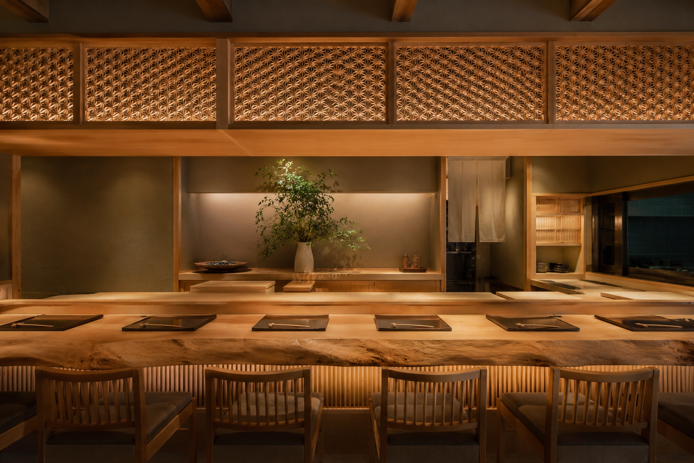

Philosophy
Savor the Essence
of Japan.
Established thirty years ago in the heart of Ginza.
FUKAI prides itself on "authentic" flavors that respect tradition.
Every morning, our master chef personally visits the market
to select the finest seasonal ingredients.
From earthy vegetables to the freshest seafood,
we transform nature’s bounty into culinary art.
Serenity & Warmth
A dignified atmosphere that makes you forget the city's bustle.
Featuring a counter made from centuries-old Japanese cypress
and delicate Kumiko woodwork crafted by artisans,
our space offers a peaceful escape for our guests.
